from diffusers import StableDiffusionImg2ImgPipelineIntroduction & Setup
Inspired by the amazing paper “DiffEdit: Diffusion-based semantic image editing with mask guidance” which Jeremy discussed in last week’s class of Practical Deep Learning for Coders Pt2, this is an attempt (v1) at implementing step one of the paper’s semantic image editing method.
See below an image from the paper, illustrating this novel method of editing images simply using a text query:

Seeing the automatic mask generation was fascinating for me, and it was evident from interactions during the class that this was indeed a novel, interesting way to generate pixel masks. Stable Diffusion, the poster-child for modern AI, and the basis for cool tech like Dream Studio and Midjourney, could do something more pragmatic too! The mask generation strategy is simple - it involves using stable diffusion to create a pixel mask for an input image, simply using two text prompts. Instead of going off on an verbose explanation I’ll allow a screenshot from the DiffEdit paper to do the job.

If you wish to delve deeper into Stable Diffusion I highly recommend going through this amazing repo from fast.ai - diffusion nbs on GitHub.
To quote the paper, for the mask creation - “We add noise to the input image, and denoise it: once conditioned on the query text, and once conditioned on a reference text (or unconditionally). We derive a mask based on the difference in the denoising results”. The above screenshot is part of a detailed schematic - where the input is the image x0 and query text Q = 'Zebra' and reference text R = 'Horse'. The StableDiffusionImg2ImgPipeline pipeline from HuggingFace takes care of adding the Gaussian noise to an input image, and denoising the resulting image by running inference using a pretrained model. We can play around with the inference input parameters like input image, number of inference steps, strength of prompt guidance, etc. to influence the denoised image output.
Note: This post documents multiple experiments, with varying levels of quality of final output. The intent is to capture the thought process and important trial and error and resulting insights that went into trying to generate a good pixel mask using SD.
Load the pretrained StableDiffusionImg2ImgPipeline onto pipe:
pipe = StableDiffusionImg2ImgPipeline.from_pretrained("CompVis/stable-diffusion-v1-4",revision="fp16",torch_dtype=torch.float16, safety_checker = None).to("cuda")Let’s load and take a look at the input image, x0 :
init_image = Image.open("dark-horse-riverV2.jpeg")
pixels = init_image.load()
init_image.show()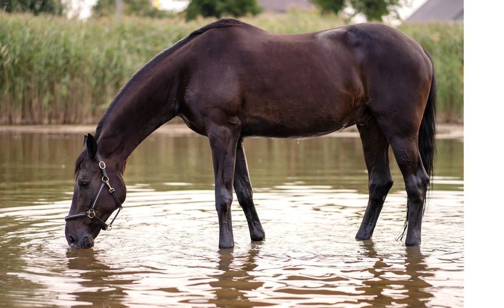
Single output - based mask generation
In this case, we’ll keep num_images_per_prompt=1 in the image-image stable diffusion pipeline, and see how good a mask we can generate using that. We’ll play around a bit with num_inference_steps to create the best possible mask.
pipe takes care of adding noise to the input image init_image, and denoising it for num_inference_steps=8, with respect to the reference text - "a horse".
torch.manual_seed(1000)
prompt = "a horse" #Denoising image with respect to the identifying phrase
image = pipe(prompt=prompt, num_images_per_prompt=1, init_image=init_image, strength=0.8, num_inference_steps=10).images
image[0]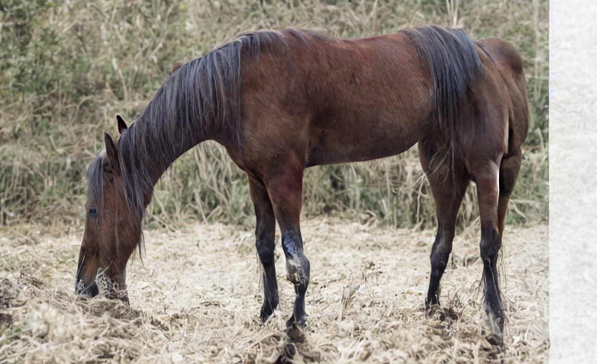
That’s a scary looking horse, one must admit! For some reason I’ve seen from my experiments (not recorded here) that the model often grows extra appendages from the tail pixels of horse images. We can try reducing num_inference_steps to prevent that, but the downside is that the output image will be noisy, since we haven’t allowed for enough inference steps. For now, we’ll move on and see what happens with the query text denoising.
We use pipe to add noise to the input image init_image, and denoise it for num_inference_steps=10, with respect to the query text - "a zebra".
torch.manual_seed(1000)
prompt_q = "a zebra" #Denoising image with respect to the identifying phrase
image_q = pipe(prompt=prompt_q, num_images_per_prompt=1, init_image=init_image, strength=0.8, num_inference_steps=10).images
image_q[0]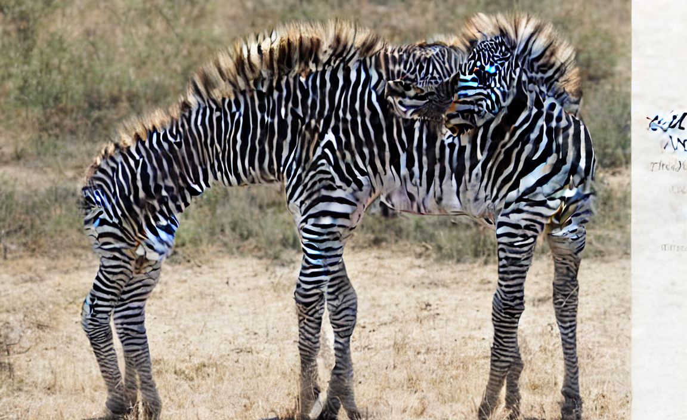
That was unexpected! Let’s reduce num_inference_steps to 8 to prevent the inference from going too far!
torch.manual_seed(1000)
prompt_q = "a zebra" #Denoising image with respect to the identifying phrase
image_q = pipe(prompt=prompt_q, num_images_per_prompt=1, init_image=init_image, strength=0.8, num_inference_steps=8).images
image_q[0]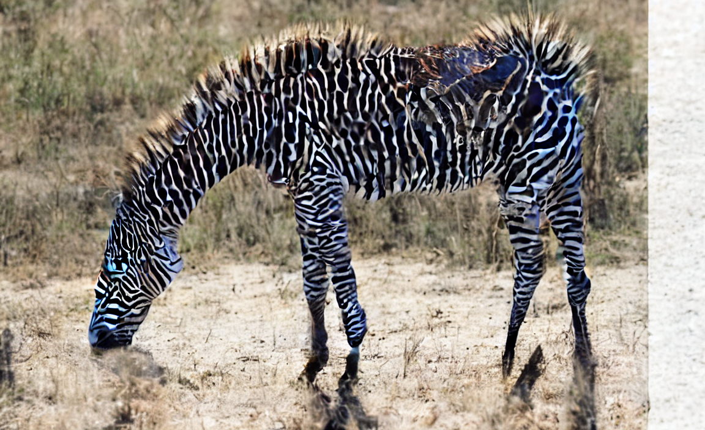
Better. Notice how the background is changing considerably based on the prompt. Let’s try altering the prompt to make sure the backgrounds are relatively similar in the images denoised with respect to both Query Q and Reference R.
torch.manual_seed(1000)
prompt = "a horse drinking water" #Denoising image with respect to the identifying phrase
image = pipe(prompt=prompt, num_images_per_prompt=1, init_image=init_image, strength=0.8, num_inference_steps=10).images
image[0]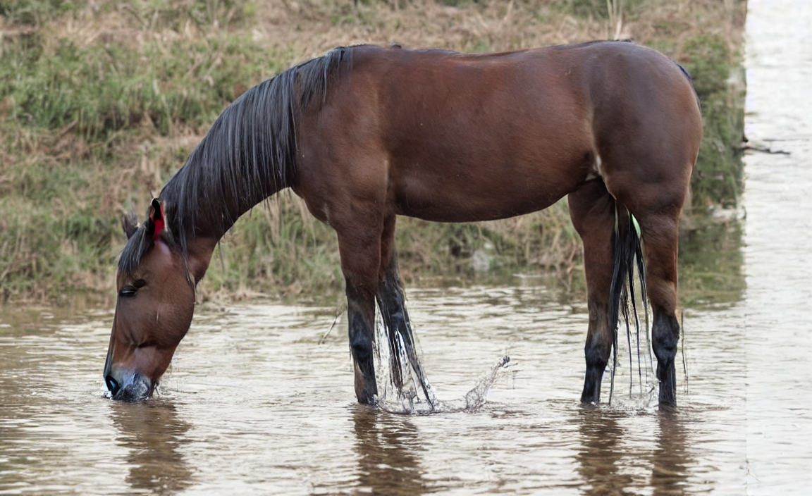
torch.manual_seed(1000)
prompt_q = "a zebra drinking water" #Denoising image with respect to the identifying phrase
image_q = pipe(prompt=prompt_q, num_images_per_prompt=1, init_image=init_image, strength=0.8, num_inference_steps=10).images
image_q[0]
Notice how giving more information in the prompt about the action of the subject with the input “a zebra drinking water” has allowed the model to run for 10 inference steps without morphing the zebra too badly!
Neither of those are particularly pretty images on their own; but let’s attempt to find the “normalised difference between the denoised images”, and generate a rough mask. Then we can try to play with num_inference_steps and create a better mask. Once that parameter’s ideal value is clear we can move to trying to use multiple denoised images.
from torchvision import transforms
convert_to_tensor = transforms.ToTensor()
convert_to_image = transforms.ToPILImage()Since we’ll be using this operation often, let’s define a function to compute the normalised absolute difference between two images.
def norm_diff_abs(a,b):
a_tens = convert_to_tensor(a)
b_tens = convert_to_tensor(b)
ftens = (abs(a_tens-b_tens))/(a_tens+b_tens)
fimage = convert_to_image(ftens)
return fimageNote that abs() is an important part of getting a meaningful normalised difference image. Without it the resulting difference image doesn’t serve our purpose well. Ponder the reason, dear reader ;)
im_diff_normabs = norm_diff_abs(image_q[0], image[0])im_diff_normabs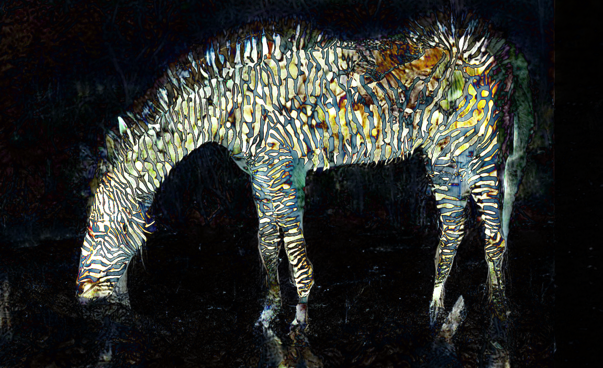
Now that we have the normalised difference between the denoised images (a visual representation of the contrast between reference text and query), let’s write a function to convert this image to grayscale and binarize this. This function, when called, should yield the final mask M.
def GSandBinarize(im, **kwargs):
im_array = asarray(im)
im_grayscale = cv2.cvtColor(im_array, cv2.COLOR_BGR2GRAY)
if kwargs["thresh_method"] == 'manual':
th, im_binary_array = cv2.threshold(im_grayscale, kwargs["thresh"], 255, cv2.THRESH_BINARY) #manual thresholding
else:
th, im_binary_array = cv2.threshold(im_grayscale, 0, 255, cv2.THRESH_OTSU) #auto thresholding
im_binary = Image.fromarray(im_binary_array)
return im_binary Now let’s try binarising the difference using the OTSU thresholding method, which will automatically pick a pixel threshold value.
GSandBinarize(im_diff_normabs, thresh_method='OTSU')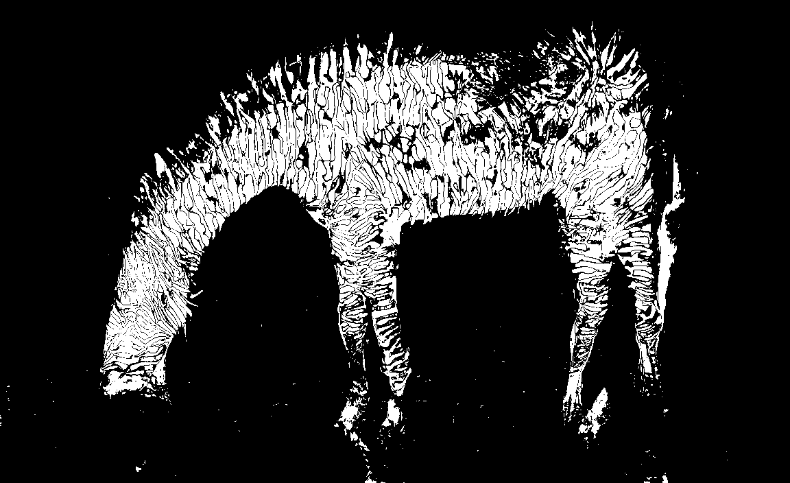
The backgound is not too shabby; it’s almost fully blacked out, but the horse body has a lot of black areas. Now let’s try binarising the difference using the binary thresholding method, which allows us to pick a pixel threshold value.
GSandBinarise(im_diff_normabs, thresh_method='manual', thresh=30)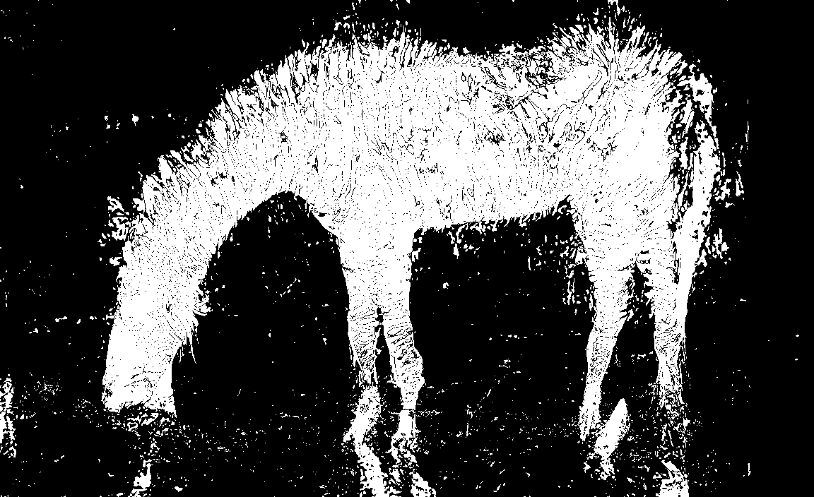
Now, in this case, more of the horse’s body is white, making the mask better at capturing the subject; but lowering the pixel threshold manually has given rise to many white patches in the background as well. Let’s try solving this.
SideNote: For the exact same model, random seed, and parameters, the mask seems to come out slightly better on a A4000 GPU, as compared to a P5000. All outputs shown here are from running inference on a Paperspace A4000 instance.
Now that we have the whole mask generation process ready, let’s play a bit with the num_inference_steps parameter to see if we can get a better mask!! Let’s start with num_inference_steps=6.
torch.manual_seed(1000)
prompt = "a horse drinking water" #Denoising image with respect to the identifying phrase (lower number of inf steps)
image = pipe(prompt=prompt, num_images_per_prompt=1, init_image=init_image, strength=0.8, num_inference_steps=6).images
image[0]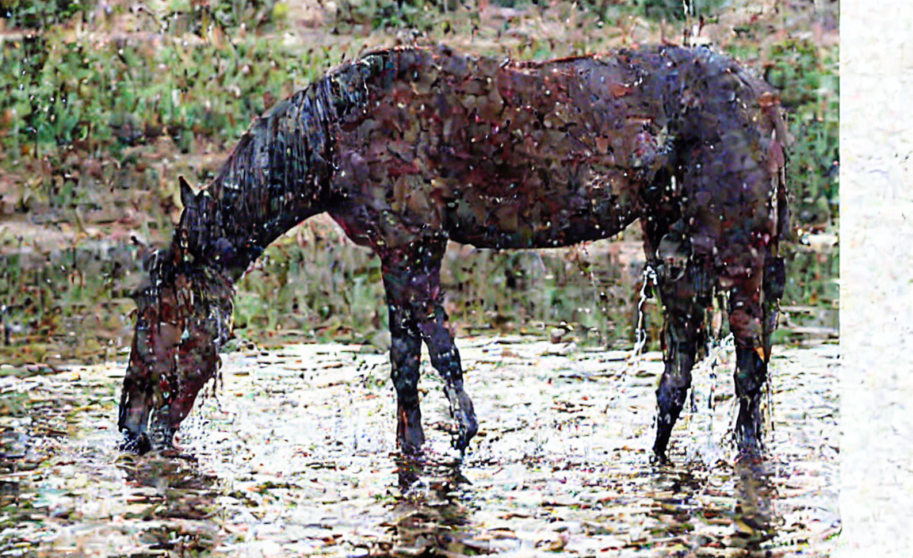
torch.manual_seed(1000)
prompt_q = "a zebra drinking water" #Denoising image with respect to the identifying phrase (lower number of inf steps)
image_q = pipe(prompt=prompt_q, num_images_per_prompt=1, init_image=init_image, strength=0.8, num_inference_steps=6).images
image_q[0]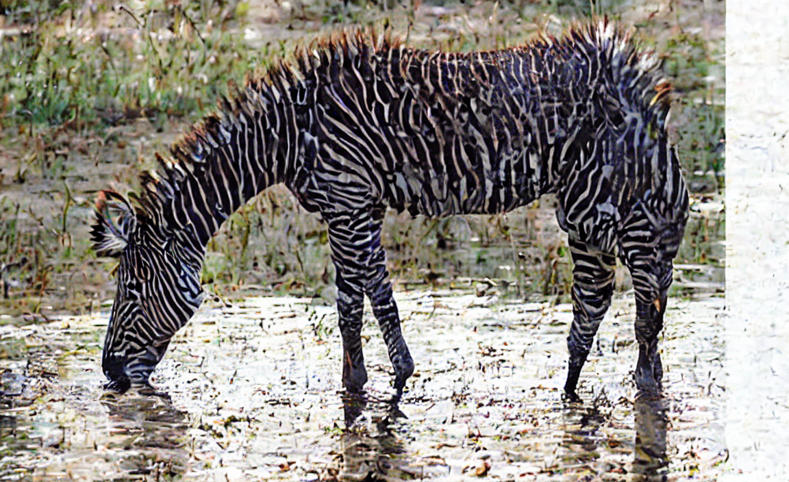
im_diff_normabs = norm_diff_abs(image_q[0], image[0])
GSandBinarise(im_diff_normabs, thresh_method='OTSU')
GSandBinarise(im_diff_normabs, thresh_method='manual', thresh=30)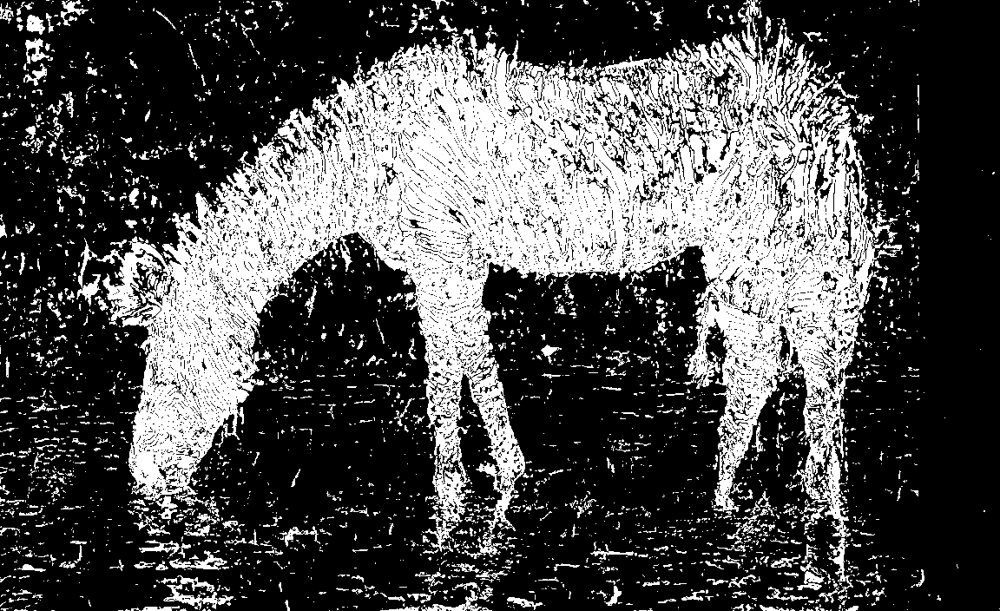
As we can see, this leads to a much clearer outline of the horse than before, but the image is littered with too many white patches. I suspect that that can be solved by averaging out multiple outputs (see next section), and so num_inference_steps=6 can be considered a good candidate for our final run. Now let’s try num_inference_steps=8:
torch.manual_seed(1000)
prompt = "a horse drinking water" #Denoising image with respect to the identifying phrase
image = pipe(prompt=prompt, num_images_per_prompt=1, init_image=init_image, strength=0.8, num_inference_steps=8).images
image[0]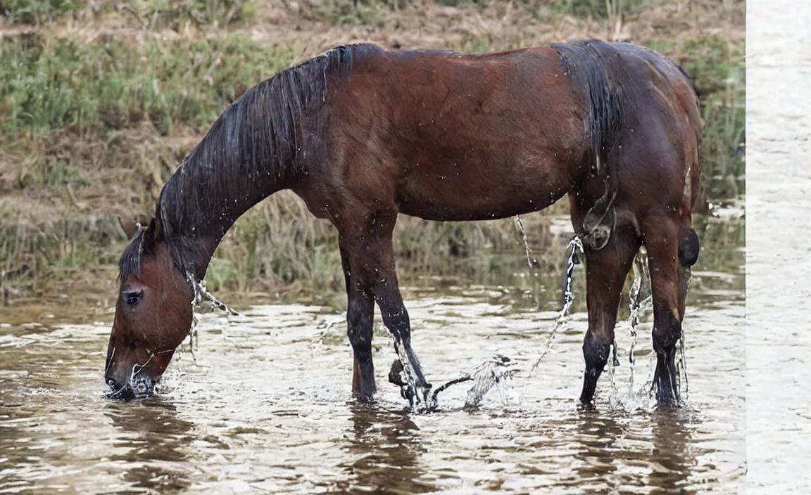
torch.manual_seed(1000)
prompt_q = "a zebra drinking water" #Denoising image with respect to the identifying phrase
image_q = pipe(prompt=prompt_q, num_images_per_prompt=1, init_image=init_image, strength=0.8, num_inference_steps=8).images
image_q[0]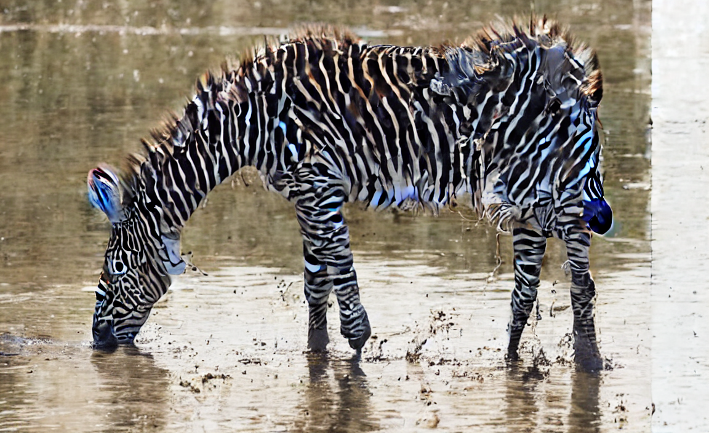
im_diff_normabs = norm_diff_abs(image_q[0], image[0])
GSandBinarise(im_diff_normabs, thresh_method='OTSU')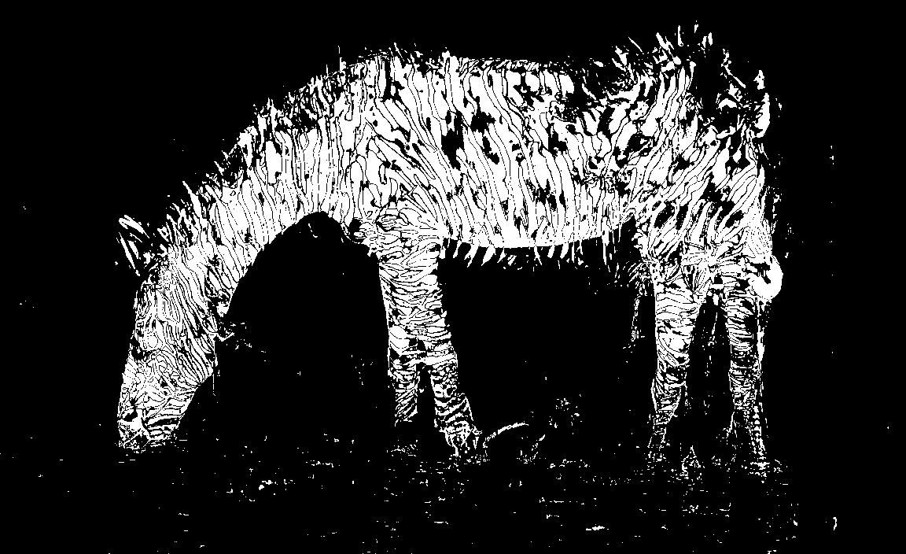
GSandBinarise(im_diff_normabs, thresh_method='manual', thresh=30)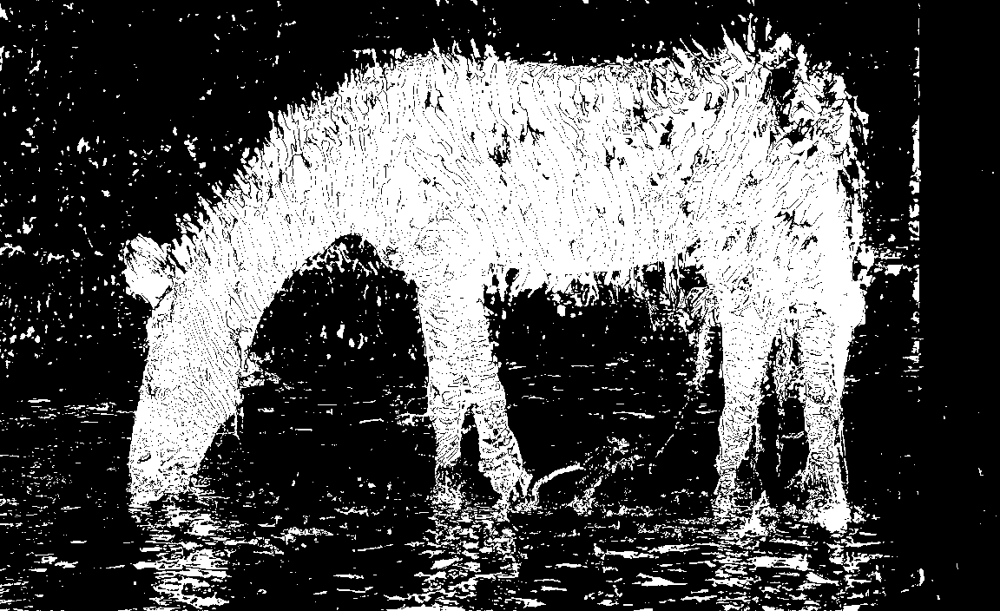
Well why not use a higher num_inference_steps to allow for more denoising? Fair point; but what often seems to happen is that, weird artifacts are generated at a high value of num_inference_steps :
torch.manual_seed(1000)
prompt_q = "a zebra drinking water" #Denoising image with respect to the identifying phrase
image_q = pipe(prompt=prompt_q, num_images_per_prompt=1, init_image=init_image, strength=0.8, num_inference_steps=30).images
image_q[0]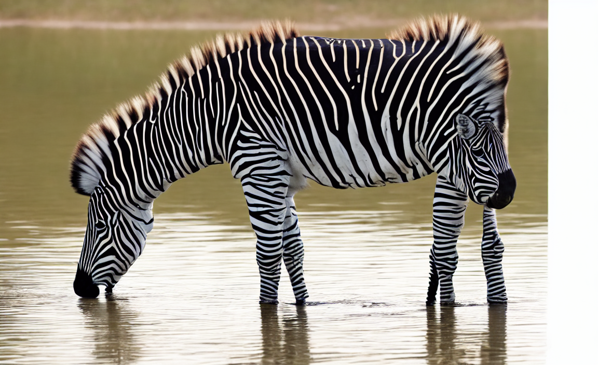
A super clean-looking image, but now the zebra has two heads!
torch.manual_seed(1000)
prompt = "a horse drinking water" #Denoising image with respect to the identifying phrase
image = pipe(prompt=prompt, num_images_per_prompt=1, init_image=init_image, strength=0.8, num_inference_steps=30).images
image[0]
im_diff_normabs = norm_diff_abs(image_q[0], image[0])
GSandBinarise(im_diff_normabs, thresh_method='OTSU')
GSandBinarise(im_diff_normabs, thresh_method='manual', thresh=30)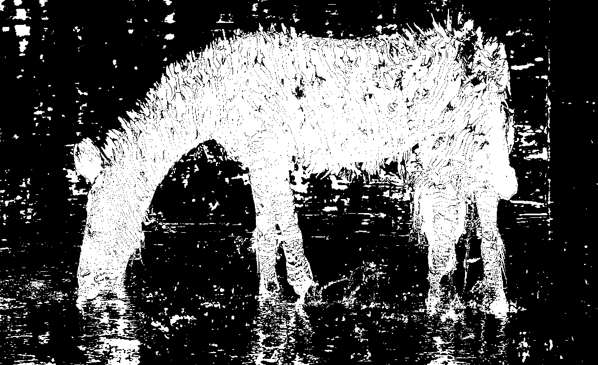
It’s still just as noisy as the mask outputs we got using a much lower value of num_inference_steps, and now, the outline has become less accurate because of all the extra heads in the denoised images! Let’s stick to a lower value for num_inference_steps and come up with a different way to get a clearer mask.
Multi output - based mask generation
Since we are denoising a image after adding Gaussian noise to it, we could try to generate multiple denoised images for each prompt, and average them out before taking the normalised difference of query versus reference. The idea is that averaging multiple images denoised based on the same prompt will help cancel out the random noise, and also create a clearer image of the model’s idea of a “zebra” or “horse”.
Note: Judging from the DiffEdit paper’s schematic of the process, this is likely the method adopted by its authors.
pipe.enable_attention_slicing()# dark-horse-riverv2-rsz
init_image = Image.open("dark-horse-riverV2-rsz.jpg")
pixels = init_image.load()
init_image.show()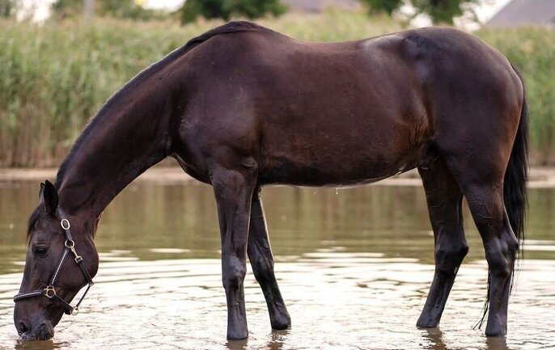
The image has been cropped and resized to avoid a CUDA OOM error when running for a high value of num_images_per_prompt.
First, we try to implement this with 10 images per prompt, denoised for num_inference_steps=6.
torch.manual_seed(1000)
prompt = "a horse drinking water"
images_r6 = pipe(prompt=prompt, num_images_per_prompt=10, init_image=init_image, strength=0.8, num_inference_steps=6).images
image_grid(images_r6, rows=2, cols=5)
torch.manual_seed(1000)
prompt_q = "a zebra drinking water"
images_q6 = pipe(prompt=prompt_q, num_images_per_prompt=10, init_image=init_image, strength=0.8, num_inference_steps=6).images
image_grid(images_q6, rows=2, cols=5)
Let’s build out the function for passing in the list of images; and getting the averaged out image! How? Stack the list of images generated and create an average of them, along the “number of images” axis.
Note - This function, like all others, was built by experimenting with each line of its components and then putting them together - a nifty trick, courtesy of Jeremy!
def get_averageIm(ImList):
imtensors = []
for Im in ImList:
imtensor = convert_to_tensor(Im)
imtensors.append(imtensor)
init_tensor = torch.zeros(imtensors[0].shape)
for tensor in imtensors:
init_tensor += tensor
total_tensor = init_tensor
av_imtensor = (total_tensor)/10
av_image = convert_to_image(av_imtensor)
return av_imageav_image_r6 = get_averageIm(images_r6)
av_image_r6
av_image_q6 = get_averageIm(images_q6)
av_image_q6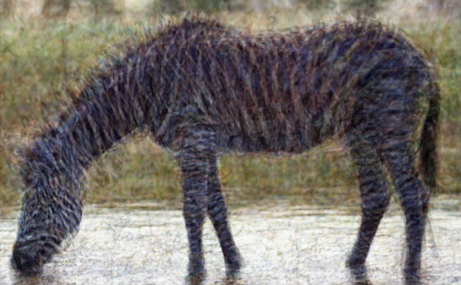
Like it or not, this is what peak “horse” and “zebra” performance look like! (reference - Chapter 4 of fastbook).
im_diff_normabs6 = norm_diff_abs(av_image_r6, av_image_q6)
GSandBinarise(im_diff_normabs6, thresh_method='OTSU')
mask_6step = GSandBinarise(im_diff_normabs6, thresh_method='manual', thresh=20)
mask_6step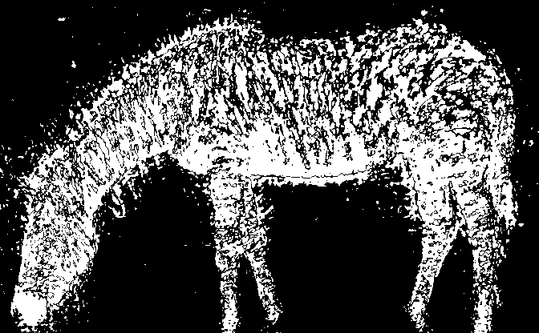
Repeat the same for other num_inference_steps=8 values to get a better mask. Also remember to play around with manual threshold value, to get ideal mask.
The mask output looked decent for num_inference_steps=8 in the single-output section, so let’s try that here:
torch.manual_seed(1000)
prompt = "a horse drinking water"
images_r8 = pipe(prompt=prompt, num_images_per_prompt=10, init_image=init_image, strength=0.8, num_inference_steps=8).images
image_grid(images_r8, rows=2, cols=5)
torch.manual_seed(1000)
prompt_q = "a zebra drinking water"
images_q8 = pipe(prompt=prompt_q, num_images_per_prompt=10, init_image=init_image, strength=0.8, num_inference_steps=8).images
image_grid(images_q8, rows=2, cols=5)
av_image_r8 = get_averageIm(images_r8)
av_image_r8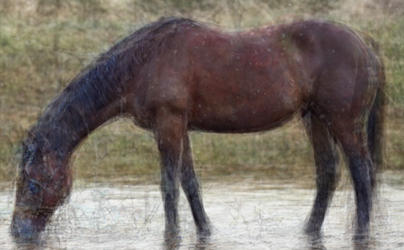
av_image_q8 = get_averageIm(images_q8)
av_image_q8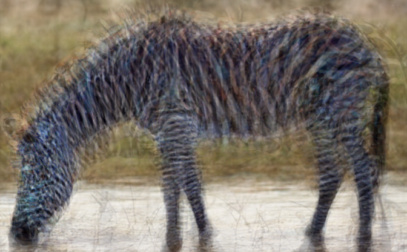
im_diff_normabs8 = norm_diff_abs(av_image_r8, av_image_q8)
mask_otsu_8step = GSandBinarise(im_diff_normabs8, thresh_method='OTSU')
mask_otsu_8step
mask_8step = GSandBinarise(im_diff_normabs8, thresh_method='manual', thresh=25)
mask_8step
That looks better than the previous mask. We’ve considerably reduced the white patches in the background. Let’s try num_inference_steps=7.
#inf steps 7
torch.manual_seed(1000)
prompt = "a horse drinking water"
images_r7 = pipe(prompt=prompt, num_images_per_prompt=10, init_image=init_image, strength=0.8, num_inference_steps=7).images
image_grid(images_r7, rows=2, cols=5)
torch.manual_seed(1000)
prompt_q = "a zebra drinking water"
images_q7 = pipe(prompt=prompt_q, num_images_per_prompt=10, init_image=init_image, strength=0.8, num_inference_steps=7).images
image_grid(images_q7, rows=2, cols=5)
av_image_r7 = get_averageIm(images_r7)
av_image_r7
av_image_q7 = get_averageIm(images_q7)
av_image_q7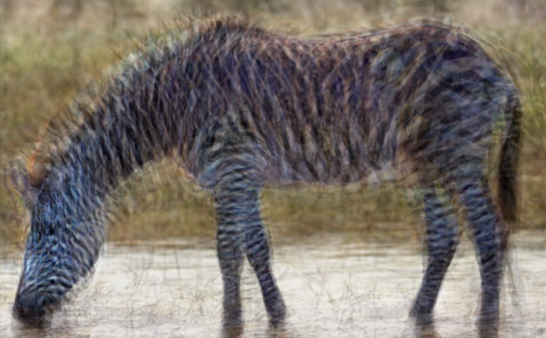
im_diff_normabs7 = norm_diff_abs(av_image_r7, av_image_q7)
mask_otsu_7step = GSandBinarise(im_diff_normabs7, thresh_method='OTSU')
mask_otsu_7step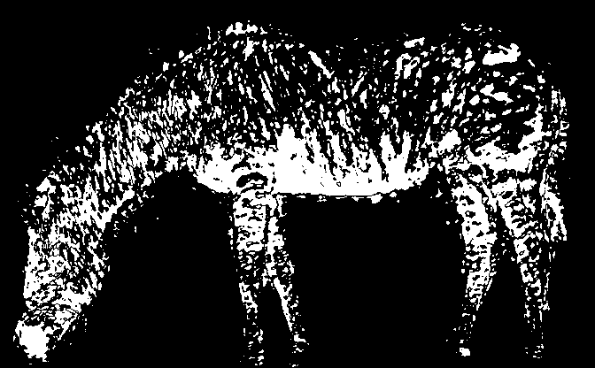
mask_7step = GSandBinarise(im_diff_normabs7, thresh_method='manual', thresh=25)
mask_7step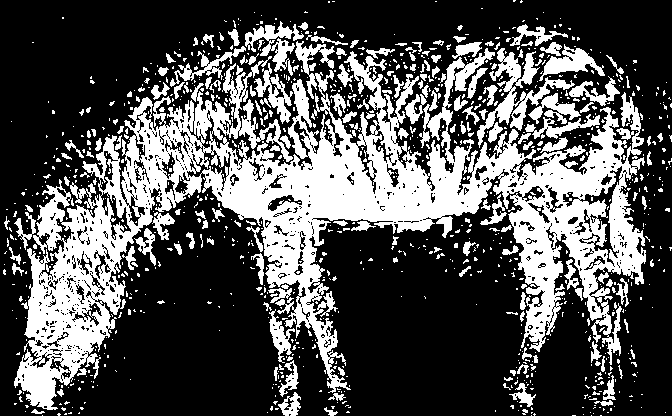
This mask (num_inference_steps=7) has a slightly cleaner outline than the one for num_inference_steps=8. Let’s try going a bit higher; num_inference_steps=10
torch.manual_seed(1000)
prompt = "a horse drinking water"
images_r10 = pipe(prompt=prompt, num_images_per_prompt=10, init_image=init_image, strength=0.8, num_inference_steps=10).images
image_grid(images_r10, rows=2, cols=5)
torch.manual_seed(1000)
prompt_q = "a zebra drinking water"
images_q10 = pipe(prompt=prompt_q, num_images_per_prompt=10, init_image=init_image, strength=0.8, num_inference_steps=10).images
image_grid(images_q10, rows=2, cols=5)
As one can see, there are a few weird images, and all the images are quite deformed with respect to the original init_image. Let’s look at the generated mask.
av_image_r10 = get_averageIm(images_r10)
av_image_r10
av_image_q10 = get_averageIm(images_q10)
av_image_q10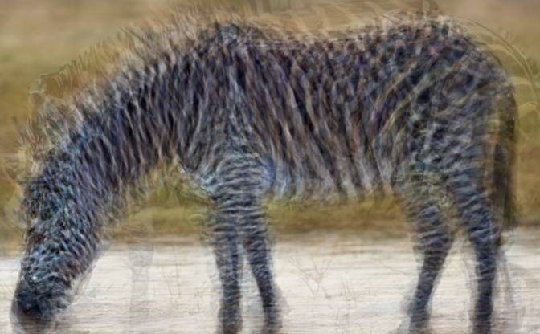
im_diff_normabs10 = norm_diff_abs(av_image_r10, av_image_q10)
mask_otsu_10step = GSandBinarise(im_diff_normabs10, thresh_method='OTSU')
mask_otsu_10step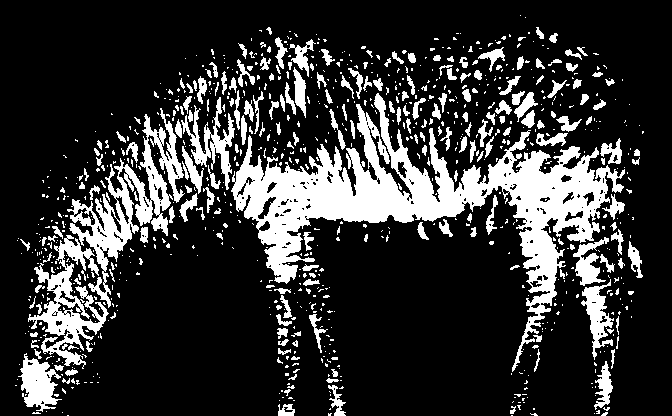
mask_10step = GSandBinarise(im_diff_normabs10, thresh_method='manual', thresh=25)
mask_10step
We start to see a more patchy outline, because the denoised images have deviated more and more from the original outline. Let’s go down one step and try num_inference_steps=9.
torch.manual_seed(1000)
prompt = "a horse drinking water"
images_r9 = pipe(prompt=prompt, num_images_per_prompt=10, init_image=init_image, strength=0.8, num_inference_steps=9).images
image_grid(images_r9, rows=2, cols=5)
torch.manual_seed(1000)
prompt_q = "a zebra drinking water"
images_q9 = pipe(prompt=prompt_q, num_images_per_prompt=10, init_image=init_image, strength=0.8, num_inference_steps=9).images
image_grid(images_q9, rows=2, cols=5)
The images are still weird and vary considerably in the position of the subject, so we can expect the mask to be “noisy” as well.
av_image_r9 = get_averageIm(images_r9)
av_image_r9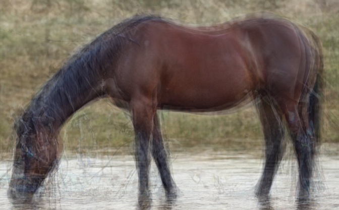
av_image_q9 = get_averageIm(images_q9)
av_image_q9
im_diff_normabs9 = norm_diff_abs(av_image_r9, av_image_q9)
mask_otsu_9step = GSandBinarise(im_diff_normabs9, thresh_method='OTSU')
mask_otsu_9step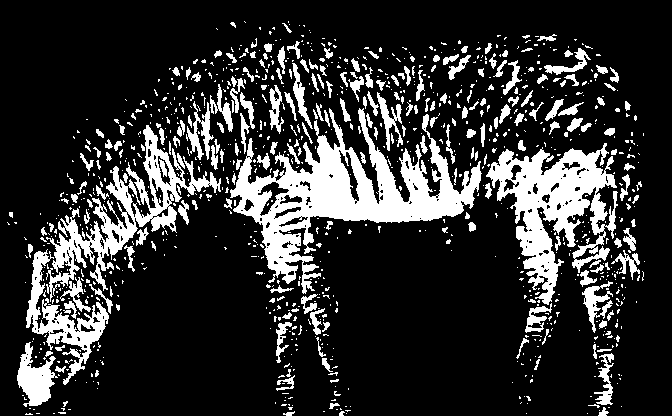
mask_9step = GSandBinarise(im_diff_normabs9, thresh_method='manual', thresh=30)
mask_9step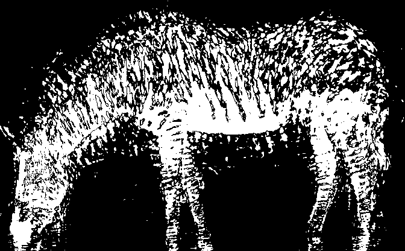
Though better than the previous run, this still has a rather unclear outline. From the above analyses, we can pick num_inference_steps=6, 7, 8 as yielding usable pixel masks.
mask_list = [mask_6step, mask_7step, mask_8step]
image_grid(mask_list, rows=1, cols=3)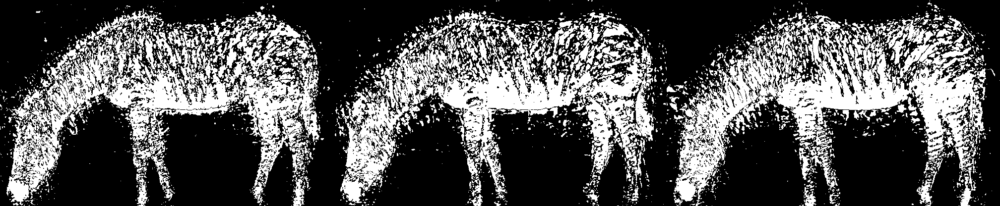
If we could see how these masks look on the original image, I suppose they’d be more convincing. I’m currently facing a minor bug in overlaying a red mask onto the original image; and this notebook will be updated with the same once that is resolved.
Though a far cry from the clean mask illustrated in the DiffEdit paper, I suppose this isn’t a bad start. As I experiment with other techniques (like using other noise schedulers) to generate a fully clean mask, I’ll be adding relevant updates on this post.
Hopefully you got something from your time here! If you read this and have any suggestions/comments on how to improve my code (or words!), please reach out to me @Twitter.
Cheers!! 😄